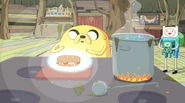

Ingredients
- Cream cheese
- Pickles (from Prismo)
- Dill
- Diced boiled eggs
- Bird (from the window)
- Sliced cucumbers
- Sliced Roma tomatoes
- Sweet yellow onions
- Tears (for salt)
- Meat prepared sous-vide with rosemary and thyme (possibly a play on words from "Time Sandwich")
- Bacon
- A lobster's soul
Recipe instructions
- [sharpening knives] One, two, three, four, five, six. [putting herbs on a steak]
- Rosemary, thyme. [puts the steak in a bag, seals it, and places it in a pot of hot water]
- Sous-vide. Keep that at 135 degrees. [cuts a loaf of bread in half and uses a blowtorch to toast the inside]
- All right, now we're gettin' somewhere. [places each ingredient on the bread as he says their names]
- Cream cheese! Pickles from my boy Prismo! And some dill! [grabs a bird from the windowsill]
- Diced boiled eggs! Bird from the window! Yeah, baby, now we're rollin'! Whoo!
- Common cucumber! Sliced Roma tomato. Sweet yellow onion—organic. [tears up]
- Oh, almost done. [wipes tears away and puts them in the sandwich]
- Tears for salt. Meat prepared sous-vide. ♪Bacon.♪ [holds up a lobster]
- You're the most important part. [He puts the lobster in a pot of boiling water,
- and its soul escapes. Jake shoos it onto the sandwich.] Lobster soul. [puts on the top piece of bread,
- completing the sandwich and causing it to glow blue] It's amazing! Ohhh,
- [falls backwards, and Jake and BMO catch him] this is the greatest sandwich I've ever made!
Return to top
Return to main page